Plasma
File
Edit
View
Go
Window
Help
Fri Nov 14 10:45 AM
Documents
This PC
Recycle Bin
File Explorer
Quick files
notes.txt
Modified: Nov 10
project.zip
Modified: Nov 9
screenshot.png
Modified: Nov 8
10:45 AM
Pinned
A
App 1
B
App 2
C
App 3
D
App 4
Recommended
Recent file · notes.txt